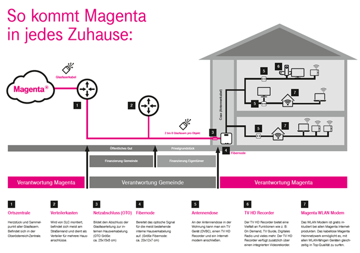

Mich als Mobilfunk Nostalgiker würde interessieren, wo der erste Mobilfunkmasten von Max. Mobil damals im Jahr 1996 on air ging und mit welchen Endgeräten der erste Testcall durchgeführt wurde. Vielleicht gibt es dazu noch Infos

Was bewegt euch? Welche Themen interessieren euch?
-) Einblicke
-) interessante Facts
-) spannende Infos
-) lustige Anekdoten
-) Infos rund ums Unternehmen
-) Einblicke in die Technologien
Wir freuen uns auf spannende Themen und euer Feedback.
Mich als Mobilfunk Nostalgiker würde interessieren, wo der erste Mobilfunkmasten von Max. Mobil damals im Jahr 1996 on air ging und mit welchen Endgeräten der erste Testcall durchgeführt wurde. Vielleicht gibt es dazu noch Infos

Wie groß ist eigentlich das Unternehmen und was gehört da alles an Sparten dazu?
Mit wem arbeitet Magenta zusammen - wer sind da die Hauptplayer?

Am 27.3.2021 um 07:16 schrieb Christian_E:Wie groß ist eigentlich das Unternehmen und was gehört da alles an Sparten dazu?
Mit wem arbeitet Magenta zusammen - wer sind da die Hauptplayer?")
@Christian_E Auf unserer Webseite https://www.magenta.at/unternehmen finden sich in den ersten zwei Absätzen Eckdaten zum Unternehmen.
Bezüglich deiner Frage zur Zusammenarbeit. Wir arbeiten mit sehr vielen Partnern zusammen.
Hier ein paar Beispiele:
Wie ist die interne Netzwerkarchitektur und Verwaltungsinfrastruktur?
Stichwort Routing, TR-069, Switching, Darkfiber, Bandwith Links, Bandbreiten, Remote Management, teile des Ex UPC Netzwerks, neue Projekte wie FTTH Ardagger, Mobilfunk etc.
Wie flexibel sind die Plattformen?
Welche Plattformen gibt es und wie wird es in der Zukunft aussehen?
Am 25.3.2021 um 19:37 schrieb Rexalius2000:Mich als Mobilfunk Nostalgiker würde interessieren, wo der erste Mobilfunkmasten von Max. Mobil damals im Jahr 1996 on air ging und mit welchen Endgeräten der erste Testcall durchgeführt wurde. Vielleicht gibt es dazu noch Infos

Hallo @Rexalius2000 , nach etwas Recherche habe ich folgende Infos für dich:
Anlässlich des 20 jährigen Jubiläums 2016 wurden schon ein paar Facts zusammengefasst.
Den Artikel dazu findest du hier: https://newsroom.magenta.at/2016/07/12/20-jahre/
Erstmals gefunkt haben wir im Juni 1996 in Graz in der St. Veiter Straße und ein paar Tage später in Wien in der Nibelungengasse
und in der Gablenzgasse (Lugner City). Unsere Techniker waren mit Handys von AEG und dem Siemens S4 ausgestattet.
Der Bericht über einen unserer ersten Kunden ist auch sehr interessant:
Es gibt sogar ein Video über
Helmut, der Erste

Ich wünsche viel Spaß beim Durchlesen. LG Karo
Cool!
Danke
@Karo
Der soziale Gedanke ist auch eine absolute Erwähnung wert!
Hi @Christian_E , gerne, das ist auch sehr wichtig. LG Karo
Hallo @IT-Freak ,
deine Fragen sind sehr interessant und gehen sehr ins Detail. Manches ist natürlich Top Secret und kann nicht geteilt werden
 .
.
Was ich dir aber beantworten kann, ist Folgendes:
Unser Routing erfolgt über internationale Datennetze, die Datenströme von und nach Österreich transportieren.
Um zu veranschaulichen, wie Magenta bei FTTX zu den Kunden kommt, hab ich hier eine Grafik:

Infos zu unserem Netz findest du auch hier: https://www.magenta.at/netz
Mobilfunkseitig wird der Bereich 5G natürlich immer stärker forciert und ausgebaut, um die Abdeckung in Österreich voranzutreiben.
Neues zum 5G-Netzausbau:
Beste 5G Qualität: Erster 5G Standort mit 700 MHz in Betrieb genommen
Weitere 5G Facts: https://www.magenta.at/5G
smartfactory@tugraz startet den Vollbetrieb mit 5G Campus-Netzwerk von Magenta Telekom
Themen, die dich auch interessieren könnten:
Neues Netz für das Internet der Dinge: Magenta Telekom startet LTE-M in Österreich
Gigabit-Ausbau in Tirol abgeschlossen
Fokus auf Klimaschutz konzernweit verstärkt
Magenta Telekom als nachhaltiges Unternehmen ausgezeichnet
Neues Rechenzentrum in Graz stärkt digitale Infrastruktur der Steiermark
Liebe Grüße, Karo
Wie sieht es bei Magenta um das Thema Small Cells aus (besonders in Bezug auf 5G, aber auch andere Technologien)?
Wie sieht der Plan fürs Routing im Kabel-Netz aus?
Zumindest die IP-Adressen scheinen ja nun aus dem Magenta (T-Mobile) AS zu kommen und nicht mehr aus dem UPC AS .
Bearbeitet von NTM
Ein Provider aus Linz macht für ländliche Zonen exklusive Anbindungen über eine Art 5G Netz im 700 MHz Bereich.
Ist sowas auch bei Magenta ein Thema oder zukünftig angedacht?
Da würde dann das Graben in exponierteren Lagen wegfallen.
Also nicht das klassische mobile Netz als shared Medium, sondern eine eigene Infrastruktur, die auch ganz bestimmte Haushalte versorgt.
Am 14.6.2021 um 23:08 schrieb NTM:Wie sieht es bei Magenta um das Thema Small Cells aus (besonders in Bezug auf 5G, aber auch andere Technologien)?
Wie sieht der Plan fürs Routing im Kabel-Netz aus?
Zumindest die IP-Adressen scheinen ja nun aus dem Magenta (T-Mobile) AS zu kommen und nicht mehr aus dem UPC AS .
Hi @NTM , aktuell kann ich dir dazu keine Infos geben. Falls es ein Update mit Infos gibt, welche wir öffentlich teilen können, werde ich diese hier gerne nachreichen. LG Karo
Am 21.6.2021 um 14:54 schrieb Christian_E:Ein Provider aus Linz macht für ländliche Zonen exklusive Anbindungen über eine Art 5G Netz im 700 MHz Bereich.
Ist sowas auch bei Magenta ein Thema oder zukünftig angedacht?
Da würde dann das Graben in exponierteren Lagen wegfallen.
Also nicht das klassische mobile Netz als shared Medium, sondern eine eigene Infrastruktur, die auch ganz bestimmte Haushalte versorgt.
Hallo @Christian_E , dazu liegen uns aktuell keine Infos vor. LG Karo
OK. Danke @Karo
Mich würde es interessieren, ob Magenta im Bereich Ressourcenschonung / Umweltschutz mit einsteigen würde.
Es gibt zb in Graz ein Callcenter, welches aufgelöst wurde und nun leer steht. Die Idee, diese Halle zu verwenden, um eine Infrastruktur aufzubauen, bei der man als Privatperson mit seinem technischen Gerät im Bereich IT / Netzwerk / Feinelektronik vorbeikommen kann und "technische Hilfe" Reperatur oder "Service" auf Basis vieler interessierter Freiwilliger und "Technik freaks" bekommt, würde Kunden wie auch Politik begeistern. Dies würde ein Community Center aufbauen, wo vielen Kunden weitergeholfen wird, Geräte vor dem Wegwerfen bewahrt werden, lästige Fragen am Callcenter erspart werden, Viel Elektroschrott vermieden wird und Kunden mit einem zufriedenen Gefühl von diesem Community center gehen würden.
Sofern es für solche Vorschläge Ansprechspersonen gibt, würde ich unverzüglich bei Ihnen erscheinen

Die Idee finde ich gut.
Das wäre definitiv ein Alleinstellungsmerkmal und auch eine coole Werbung.
Wäre interessant, was das Magenta Team von dieser Idee hält.
@Karo kannst du dein Team zb bei einer Kaffeepause darauf ansprechen? (:
Am 1.9.2021 um 11:31 schrieb Tine:Mich würde es interessieren, ob Magenta im Bereich Ressourcenschonung / Umweltschutz mit einsteigen würde.
Es gibt zb in Graz ein Callcenter, welches aufgelöst wurde und nun leer steht. Die Idee, diese Halle zu verwenden, um eine Infrastruktur aufzubauen, bei der man als Privatperson mit seinem technischen Gerät im Bereich IT / Netzwerk / Feinelektronik vorbeikommen kann und "technische Hilfe" Reperatur oder "Service" auf Basis vieler interessierter Freiwilliger und "Technik freaks" bekommt, würde Kunden wie auch Politik begeistern. Dies würde ein Community Center aufbauen, wo vielen Kunden weitergeholfen wird, Geräte vor dem Wegwerfen bewahrt werden, lästige Fragen am Callcenter erspart werden, Viel Elektroschrott vermieden wird und Kunden mit einem zufriedenen Gefühl von diesem Community center gehen würden.
Sofern es für solche Vorschläge Ansprechspersonen gibt, würde ich unverzüglich bei Ihnen erscheinen
Hi @Tine . Das klingt wirklich sehr interessant. Ich werde deinen Input gerne in die Runde schicken. LG Karo
On 01/09/2021 at 7:21 PM, Christian_E said:Die Idee finde ich gut.
Das wäre definitiv ein Alleinstellungsmerkmal und auch eine coole Werbung.
Definitiv ...
Ich weiß nicht wie das bei euch ist, aber in unserer Gegend (Baden bei Wien) gibts solche "Events" zu Hauf und heißen RepairCafe
On 01/09/2021 at 11:31 AM, Tine said:Dies würde ein Community Center aufbauen, wo vielen Kunden weitergeholfen wird, Geräte vor dem Wegwerfen bewahrt werden, lästige Fragen am Callcenter erspart werden,
Ich nehme an du meinst damit, dass es ab und an Termine gibt wo Kunden hinkommen können? Oder meinst du dass dort jeden Tag jeand ist?
On 25/03/2021 at 2:03 PM, Karo said:-) Einblicke
Wieder mal ein Einblick in das T-Center wäre auch ganz cool - Oder wie sehen die anderen das? Was sich so verändert hat in den letzten Jahren

Ich meine, dass dieses Callcenter ähnlich einem repair-cafe fungiert, nur dass es auf die Bedürfnisse der Konsumenten selbst aufbaut. Jeder kann kommen und gehen, sich informieren, neueste Technologien einsehen, viel umfangreicher als eine typische Servicestelle, ein paar Experten, die als teilbeschäftigte Selbstständige dort den Kunden helfen, sind dann immer vor Ort.
Fragen werden untereinander geklärt, Defekte repariert, Ersatzteile ausgetauscht, Altgeräte bei bedarf weitervermittelt.
Ich bin in Graz wohnend und habe mir dieses "leere" Callcenter angesehen. Dieses Gebäude ist der perfekte Ort, um sowas aufzubauen. Ein riesiges Bürogebäude in Form einer Halle mit großem Parkplatz dabei. Wäre ich Tmobile Mitarbeiter, würde ich das sofort der Chefetage vorschlagen

10 minutes ago, Tine said:typische Servicestelle, ein paar Experten, die als teilbeschäftigte Selbstständige dort den Kunden helfen, sind dann immer vor Ort.
Das müsste aber dann in ganz Österreich aufgezogen werden. Weil aus NÖ fährst du bestimmt nicht nach Graz zum reparieren oder um Support zu bekommen 😊
vor 3 Minuten schrieb MarioM:Das müsste aber dann in ganz Österreich aufgezogen werden. Weil aus NÖ fährst du bestimmt nicht nach Graz zum reparieren oder um Support zu bekommen 😊
Für den Anfang reicht es, in der zweitgrößten Stadt anzufangen

Am 9.9.2021 um 10:57 schrieb MarioM:Definitiv ...
Ich weiß nicht wie das bei euch ist, aber in unserer Gegend (Baden bei Wien) gibts solche "Events" zu Hauf und heißen RepairCafe
Echt? Spannend!
Davon wusste ich nichts aber in jedem Fall eine sehr gute Idee.
On 20/09/2021 at 1:29 PM, Christian_E said:
Echt? Spannend!
Davon wusste ich nichts aber in jedem Fall eine sehr gute Idee.
Yep gibts immer wieder - meistens 2-3 mal im Jahr.
Ziemlich coole Idee finde ich.
Ja definitiv!!!
Was mir noch eingefallen ist - wie sieht Magenta derzeit die Sache mit den Community Experten?
Ist das noch ein heißes Thema oder rückt das immer weiter in den Hintergrund?
Ja diese Frage würde mich auch interessieren. 👍
Ja ein spannendes Thema, wobei dies eher im Club besprochen werden sollte.
Oha ja wrong Thread - habe ich gar nicht gesehen sorry
War zwar der falsche Kanal aber Antwort haben wir leider nicht bekommen.....

Just now, Christian_E said:War zwar der falsche Kanal aber Antwort haben wir leider nicht bekommen.....

Leider ja
 Können es ja sonst nochmal im richtigen Kanal posten
Können es ja sonst nochmal im richtigen Kanal posten
Ja stimmt - machst du oder soll ich?
Just now, Christian_E said:Ja stimmt - machst du oder soll ich?
Kannst du gerne machen
 Dankeschön
Dankeschön
Ist erledigt!

3 hours ago, Christian_E said:Ist erledigt!
Dankeschön
Hallo,
@Christian_E
,
@MarioM
und
@NTM
, danke, dass ihr euch dazu noch im Club gemeldet habt.
@Georgie
hat euch dort ja bereits Infos zukommen lassen
 . LG Karo
. LG Karo
Alles klar.

Passt super!
Eine Frage welche mich interessiert wäre:
Was ist die maximale Anzahl an Antenen (MiMo) und die höchste Modulation (QAM jeweils für Upload und Download), welche ihr je nach Band im Mobilfunknetz (sowohl bei 4G und 5G) im Einsatz habt. Ich denke bezüglich MiMo wohl am ehesten 4x4 MiMo bei Band 7 und sonst eher 2x2 MiMo. Ich denke auch, dass es je nach Standort etwas unterschiedlich sein könnte, weshalb mich das Maximum im Produktivnetz interessieren würde.
Vielleicht kann dies jemand in Erfahrung bringen.
Bearbeitet von NTMWann wird von Magenta verkündet was heuer und in Zukunft gemacht wird?
Von der Telekom DE gibt es Videos wo schön ausgiebig alles verkündet wird. Zb aktuell:
Und es wurden auch schon viele Interessante Technikvideos gemacht. Interessant wäre das auf von Magenta für Österreich. Ist ja doch bei uns nicht ganz gleich wie in DE. Zb Kabel hat nur Magenta, aber die Telekom DE nicht. Würde sich auch gut ergänzen.
Am 15.2.2022 um 14:31 schrieb Julian S.:Wann wird von Magenta verkündet was heuer und in Zukunft gemacht wird?
Von der Telekom DE gibt es Videos wo schön ausgiebig alles verkündet wird. Zb aktuell:
Und es wurden auch schon viele Interessante Technikvideos gemacht. Interessant wäre das auf von Magenta für Österreich. Ist ja doch bei uns nicht ganz gleich wie in DE. Zb Kabel hat nur Magenta, aber die Telekom DE nicht. Würde sich auch gut ergänzen.
Etwas ähnliches haben wir aktuell nicht parat.
Ich kann dir aber unseren Newsroom (https://newsroom.magenta.at/) - dort findest du Presseaussendungen und
https://www.magenta.at/netz empfehlen. LG Karo
Am 2.3.2022 um 13:48 schrieb Karo:Etwas ähnliches haben wir aktuell nicht parat.
Ich kann dir aber unseren Newsroom (https://newsroom.magenta.at/) - dort findest du Presseaussendungen und
https://www.magenta.at/netz empfehlen. LG Karo
Dies ist mir schon bekannt. Leider wird die Karte oft nicht regelmäßig aktualisiert.
Bald soll ja angeblich 5G auch mit 1500 Mhz kommen. Wird dann weiterhin auch zusätzlich zu den 700 Mhz LTE1800 ausgebaut, oder steht das bei meinem Standort quasi auf wackeligen Beinen weil der Standort wohl erst spät drankommen wird und der SA Start dem zuvorkommt?
Grund für die Sorge ist nicht nur reine neugier sondern daß mein Tarif kein 5G kann obwohl der Tarifwechsel erst im November war.
Vor 8 Jahren wurde angekündigt auf 1800 und 2600 Mhz von 2x2 auf 4x4 zu steigern.
https://newsroom.magenta.at/2014/08/07/t-mobile-zuendet-in-schwechat-den-lte-booster/
Hat Magenta inzwischen schon überall 4x4 MIMO im Einsatz sodaß ein Gerät das 4x4 MIMO mir einen Mehrwert bringt wenn bei mir LTE1800 kommt? Bzw wird wenn neu ausgebaut wirt gleich 4x4 ausgebaut? Oder nur 2x2?